과일진열쇼케이스
과일쇼케이스 중고, 습도와 냉기 흐름부터 확인하세요
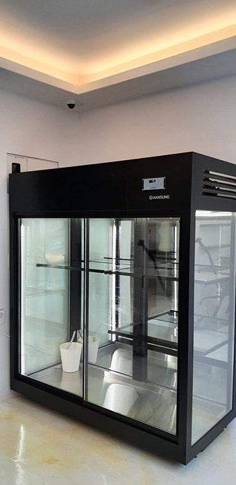
과일쇼케이스 중고는 차갑게 되는지만 볼 게 아니라, 습도를 지켜 과일이 마르거나 무르지 않는지와 칸마다 냉기가 고르게 도는지를 확인해야 합니다. 콤프레셔와 배관 상태를 알 수 없고 A/S가 어렵다면, 아낀 비용보다 무르고 버리는 과일이 더 커질 수 있습니다.
안녕하세요. 과일가게와 청과 매장의 진열 냉장고를 맞춤으로 만드는 한성쇼케이스입니다.
과일가게 창업을 준비하다 보면 냉장 진열대 견적을 보고 중고 매물로 눈을 돌리시는 경우가 많습니다. 다른 업종에서 쓰던 쇼케이스도 비교적 쉽게 구할 수 있으니 더 그렇죠.
하지만 과일은 수확한 뒤에도 숨을 쉬며 수분을 내보내는 상품이라, 음료나 포장 식품을 넣던 쇼케이스와는 필요한 환경이 다릅니다.
겉이 깨끗하고 차갑게 잘 돌아가는 매물이라도 과일을 넣으면 하루 이틀 만에 껍질이 쭈글해지거나 한쪽 칸만 먼저 무르는 일이 생깁니다.
오늘은 과일쇼케이스 중고 매물을 보러 가실 때 어떤 순서로 확인하면 좋은지, 그리고 새로 맞추는 쪽이 나은 경우는 언제인지 정리해 드리겠습니다.
1. 어떤 상품을 넣던 쇼케이스인지
가장 먼저 물어보실 것은 이전 매장에서 무엇을 넣었는지입니다. 음료나 캔을 넣던 쇼케이스는 빠르게 식히기 위해 찬 바람이 세고 내부가 건조한 편이라, 과일을 넣으면 표면 수분이 금방 날아갑니다.
반찬이나 정육용으로 쓰던 제품은 내부에 냄새가 배어 있을 수 있고, 과일은 주변 냄새를 잘 머금습니다.
내부 패킹과 바닥 구석의 냄새와 얼룩까지 확인해 보세요.
- 이전 매장 업종과 진열 상품을 물어보세요.
- 내부 냄새와 패킹 얼룩을 직접 확인하세요.
- 찬 바람이 진열 칸으로 직접 나오는 구조인지 보세요.
2. 습도와 칸별 냉기 편차
과일쇼케이스는 습도가 지나치면 표면에 물이 맺혀 조직이 물러지고, 너무 건조하면 껍질이 수축하고 윤기가 빠집니다.
매물을 볼 때 젖은 수건이나 과일 몇 개를 넣고 잠시 둔 뒤 상태를 살펴보는 것도 방법입니다.
온도계를 위 칸 앞쪽과 아래 칸 안쪽에 하나씩 넣어 보세요. 차이가 크다면 냉기가 특정 위치에만 몰리는 상태라, 그 경계에서 응결이 생기기 쉽고 일부 과일만 먼저 상합니다.
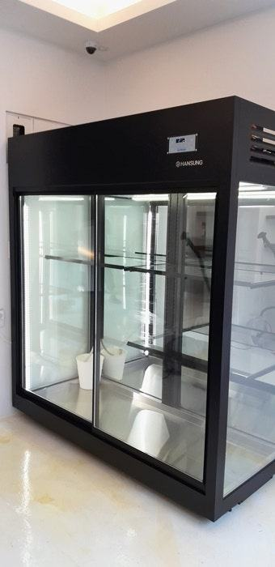
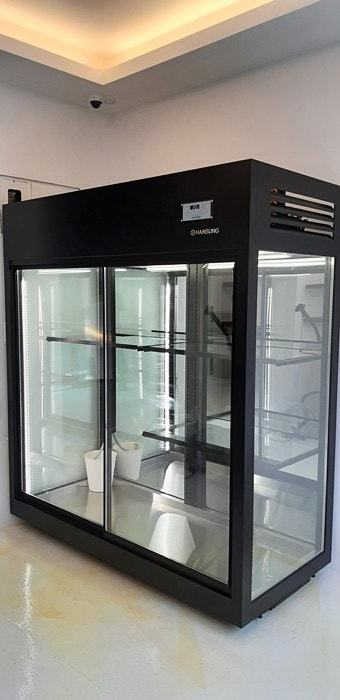
3. 콤프레셔와 배관, 위생
중고 제품의 가장 큰 걱정은 콤프레셔 출력과 배관 상태를 눈으로 확인하기 어렵다는 점입니다. 배관에 미세한 가스 누출이 있거나 콤프레셔가 지쳐 있으면 온도가 들쭉날쭉해지고, 냉각을 위해 더 오래 돌아 전기도 많이 씁니다.
과일은 껍질째 진열하는 경우가 많아 위생 상태도 중요합니다. 배수구와 바닥 구석에 찌든 때나 곰팡이가 없는지 살펴보세요.
4. 매장 크기와 A/S
과일가게는 입구 쪽 진열이 매출을 이끄는 경우가 많아 그 자리에 딱 맞는 크기가 중요합니다. 중고 매물은 이전 매장 크기로 만든 것이라 폭이 맞지 않으면 진열 칸이 모자라거나 통로가 좁아집니다.
중고 거래는 보증 기간이 끝났거나 제조사를 알 수 없는 경우가 많아, 고장 났을 때 부품을 구하기 어렵거나 수리비가 크게 나올 수 있습니다.
구매 전에 제조사와 모델명을 확인하고 수리 가능 여부를 먼저 물어보세요.
- 입구 쪽 진열 자리 폭을 먼저 재 두세요.
- 제조사·모델명과 수리 가능 여부를 확인하세요.
체크리스트
- 이전 업종과 진열 상품
- 내부 냄새·얼룩과 위생 상태
- 칸별 온도 차이와 습도 유지
- 콤프레셔 소리와 냉각 시간
- 입구 진열 자리와 크기 일치
- 제조사·모델명과 A/S 가능 여부
현장에서 자주 보는 경우: 겉은 멀쩡한데 온도가 들쭉날쭉할 때
꽃집과 과일가게처럼 습도와 온도를 함께 지켜야 하는 매장에서 비용을 아끼려고 대형 중고 쇼케이스를 들였다가 상담을 주시는 경우가 많습니다.
겉은 깨끗한데 온도가 오르내려 상품 관리가 어렵다는 이야기가 가장 흔합니다. 이전 사용자가 어떻게 관리했는지 알 수 없고, 배관 누출이나 콤프레셔 출력 저하는 육안으로 확인이 어렵기 때문입니다.
이렇게 되면 버리는 상품이 늘어 중고로 아낀 비용보다 손실이 커지기 쉽습니다. 보증 기간이 끝나 수리비가 따로 나오는 경우도 많고요.
새로 맞추면 매장 크기와 분위기, 조명 색까지 맞춰 제작하고 1년 무상 A/S를 받을 수 있으니, 중고 매물과 같은 조건으로 놓고 비교해 보시길 권해 드립니다.
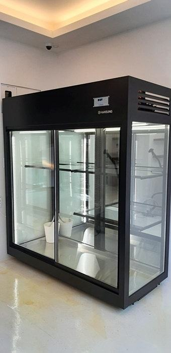
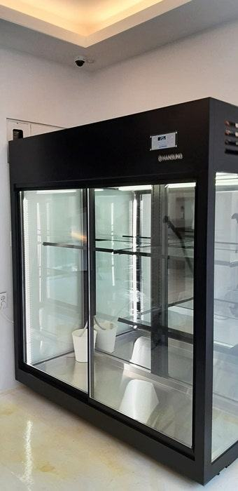
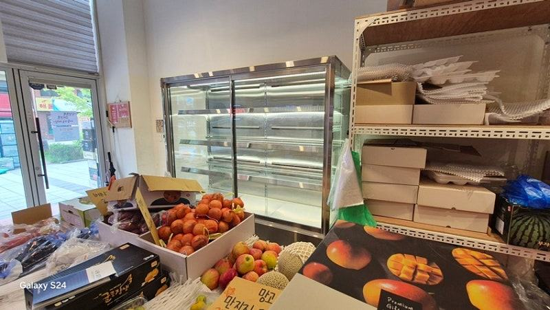
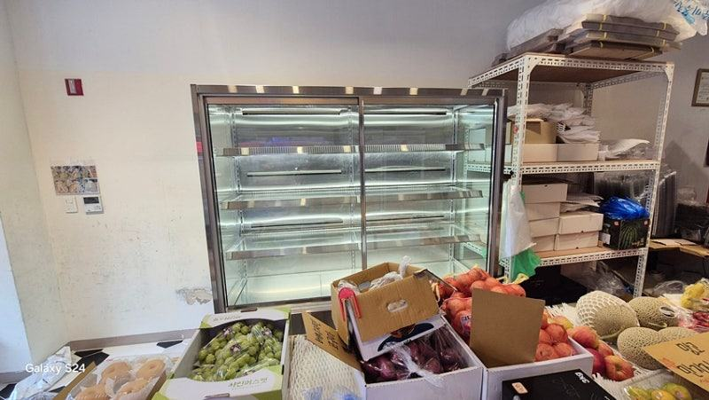
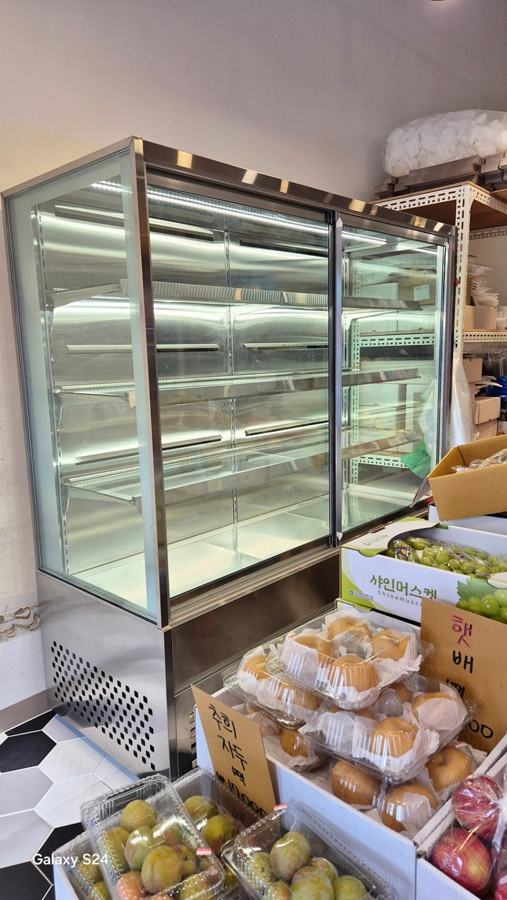
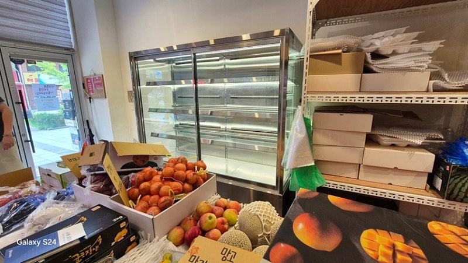
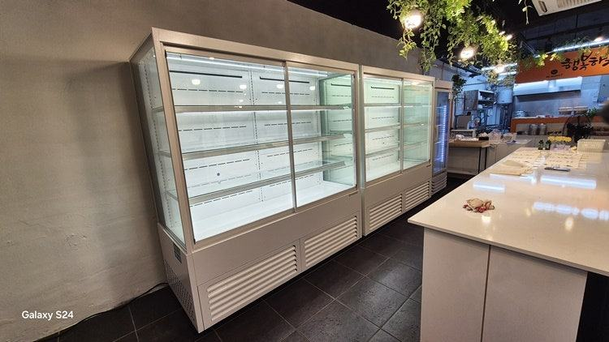
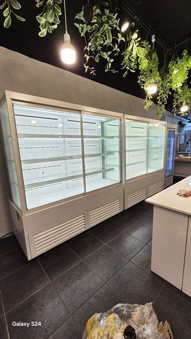
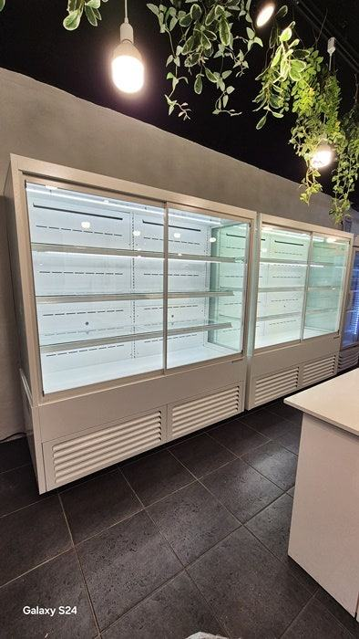
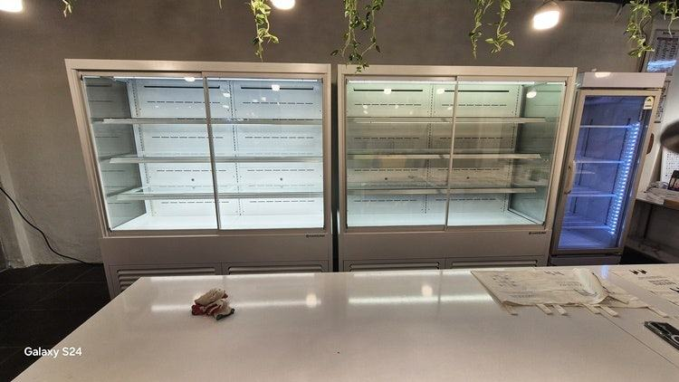
자주 묻는 질문
음료 쇼케이스 중고를 과일용으로 써도 되나요?
단기간 진열이라면 쓸 수는 있지만, 바람이 세고 건조한 구조라 과일 껍질이 빨리 마를 수 있습니다. 과일 비중이 크다면 습도와 바람 흐름을 고려한 구조를 권해 드립니다.
중고 매물을 볼 때 꼭 챙겨 갈 것이 있나요?
온도계 두세 개와 줄자를 챙겨 가세요. 칸별 온도 차이와 실제 크기를 확인하고, 명판 사진으로 제조사와 모델명을 남겨 두시면 됩니다.
중고와 새 제품 중 어떻게 결정하면 좋을까요?
상태가 확인되고 크기와 A/S가 모두 맞는다면 중고도 선택지가 됩니다. 하나라도 불확실하다면 맞춤 제작 견적과 함께 놓고 수리비와 폐기 손실까지 더해 비교해 보세요.
매장 조건에 맞춰 만드는 한성쇼케이스
원하시는 제품 사진과 설치할 공간 사진만 보내 주셔도 매장에 맞는 구성을 추천해 드립니다.
- 전국 240여 개 A/S 전담 센터 운영
- 본사 대량 자재 매입으로 품질 대비 합리적인 가격
- 유럽제·삼성 냉각 콤프레셔 적용
- 국내 최초 쇼케이스 전문 디자이너 상주
매장 폭과 원하는 진열 구성을 알려 주세요. 실측과 견적을 안내해 드립니다.
031-986-2458